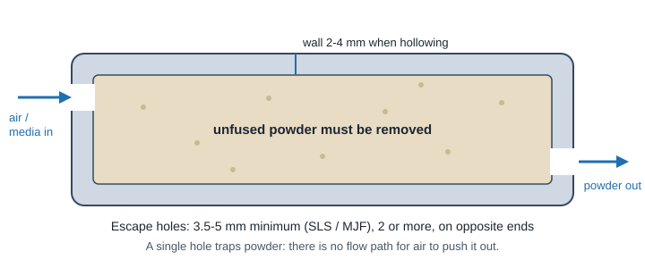
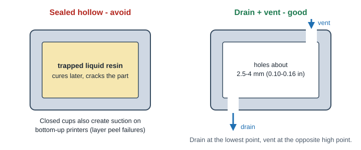
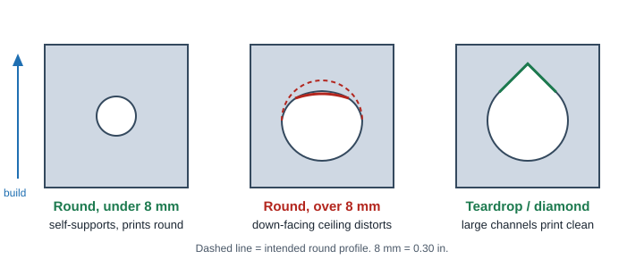
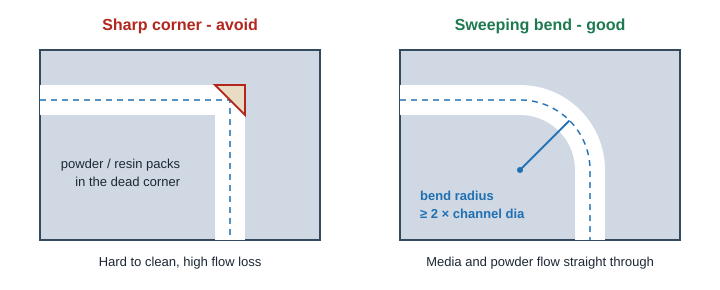

3D Printing
Internal Passages & Escape Holes
Internal channels are where additive beats machining, but every passage has to be cleaned out after the build. Design the channel and its exit path together.
Minimum channel and hole sizes by process
| Process | Min internal channel (short run) | Long or curved channel | Escape / drain holes | What fills the channel |
|---|---|---|---|---|
| FDM | ~2 mm (0.08 in) | 3 mm+; use teardrop top on horizontal runs | None needed (no trapped media) | Support material if overhangs need it |
| SLA | ~1 mm; under 0.64 mm (0.025 in) can seal shut | 3 mm+ so resin drains | Drain + vent, about 2.5-4 mm (0.10-0.16 in) | Liquid resin and supports |
| SLS | ~2 mm; gaps 0.8 mm (0.030 in) min | 5 mm+ for reliable powder removal | 3.5 mm min, 5 mm+ preferred, 2 or more | Packed unsintered powder |
| MJF | ~2 mm; gaps 0.8 mm min | 5 mm+ | 5 mm+ preferred, 2 or more | Packed unfused powder |
| DMLS | ~1 mm hole minimum | 3-8 mm; teardrop over 8 mm | 2-5 mm; 4 mm min if only one, 2 mm if several | Metal powder (sinters lightly if trapped hot) |
Values combine ProtoLabs guidance and common vendor ranges; where sources differ, the larger (safer) value is shown as the design target.
Powder escape holes (SLS, MJF, DMLS)

- Every enclosed cavity needs at least two holes, placed at opposite ends or corners of the cavity.
- Size them at 3.5-5 mm (0.14-0.20 in) or larger for nylon; bigger holes clean faster and cheaper.
- Put holes where they can be plugged, threaded or hidden later (a cosmetic face is a bad place).
- Thick solid sections in MJF (over ~4 mm) are usually hollowed to 2-4 mm walls to avoid sink and heat problems. Hollowing creates a cavity, so it needs escape holes too.
- DMLS: any trapped powder adds weight and can come loose in service. Specify a clean-out and inspection step.
Resin drain and vent holes (SLA)

- Hollow SLA parts save resin and cost, but a sealed cavity traps liquid resin that later cures, expands or leaks.
- Use a drain hole plus a vent hole, about 2.5-4 mm each. One hole alone drains poorly because air cannot get in.
- Closed cup shapes facing the vat create suction on bottom-up printers. Vent them or orient the opening toward the vat floor.
Channel shape and bends


Do
- Use bend radii of at least 2x the channel diameter.
- Keep long passages at 3-5 mm or larger so they can be cleaned.
- Give every passage two open ends; route it to an outside face.
- Use teardrop or diamond profiles for horizontal channels in metal and FDM (see horizontal holes).
- Keep 1-2 mm minimum wall between neighboring channels (more for pressure).
Don't
- Design dead-end branches: powder and resin pack into them.
- Use sharp internal corners or sudden diameter steps.
- Make long, small-diameter channels you cannot inspect.
- Expect smooth bores: inside surfaces stay as-printed (rough) and cannot be polished.
Critical bores, finish and inspection
- Critical bores and ports: print undersize and drill, ream or machine to final size. Leave about 0.25-0.5 mm (0.010-0.020 in) stock per side; the drill finder gives the nearest standard drill.
- Threads at ports: tap after printing (metal) or use inserts (plastic). Model the tap drill hole, not the thread: tap drill charts, NPT pipe threads, insert types.
- Inside roughness: as-built channels are rough (worse on down-facing surfaces). Abrasive flow machining exists for metal but adds cost.
- Inspection: blow-through or flow test each passage, weigh parts to catch trapped powder, use a borescope or CT scan for critical parts.
A machined internal passage needs straight drilled holes that intersect, plus plugs (see hole depth rules). If your channel can be made that way, compare cost. If it curves, branches or follows a surface (conformal cooling), printing is often the only practical option.
Related: process comparison · overhangs and supports · quality, time and cost tips · materials
ProtoLabs: 7 Mistakes to Avoid When Designing 3D Printed Parts, Designing a Part for Multi Jet Fusion. SOLIDWORKS: Introduction to Designing for Metal 3D Printing (DMLS channel size, quoting ProtoLabs). ETMM: 5 tips for additive manufacturing designs (DMLS escape holes). Protolabs Network: Designing for SLS (escape hole size).